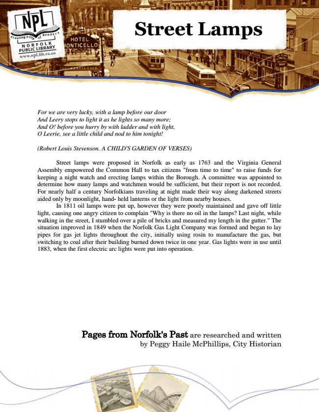

Street Lamps
For we are very lucky, with a lamp before our door And Leery stops to light it as he lights so many more; And O! before you hurry by with ladder and with light, O Leerie, see a little child and nod to him tonight!
(Robert Louis Stevenson. A CHILD'S GARDEN OF VERSES)
Street lamps were proposed in Norfolk as early as 1763 and the Virginia General Assembly empowered the Common Hall to tax citizens "from time to time" to raise funds for keeping a night watch and erecting lamps within the Borough. A committee was appointed to determine how many lamps and watchmen would be sufficient, but their report is not recorded. For nearly half a century Norfolkians traveling at night made their way along darkened streets aided only by moonlight, hand- held lanterns or the light from nearby houses.
In 1811 oil lamps were put up, however they were poorly maintained and gave off little light, causing one angry citizen to complain "Why is there no oil in the lamps? Last night, while walking in the street, I stumbled over a pile of bricks and measured my length in the gutter." The situation improved in 1849 when the Norfolk Gas Light Company was formed and began to lay pipes for gas jet lights throughout the city, initially using rosin to manufacture the gas, but switching to coal after their building burned down twice in one year. Gas lights were in use until 1883, when the first electric arc lights were put into operation.
Pages from Norfolk's Past are researched and written by Peggy Haile McPhillips, City Historian